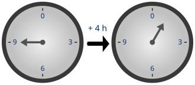

We use modular arithmetic every day when reading the time from a clock.
Let's say that it is currently 17:00, using the 24-hour clock, what will be the time in 30 hours?
To answer this question, and also to perhaps go from 24-hour clock to AM PM we must use modular arithmetic.
In order to solve this problem we need to add 30 to 17 and then find the remainder when divided by 24,
as how often it divides into 24 is the days that have passed. Or, to go from 24-hour to 12-hour
clock you must divide by 12 and find the remainder. This calculation with remainders is precisely
what modular arithmetic is all about and is the subject of this chapter.
Here we introduce the modulo operator, which gives you the
remainder of a number divided by another number. Let's go over some
examples so you understand the basic idea.
Let's solve the first problem I presented using modular arithmetic. First, 17 + 30 = 37 would be the
time if a day was as long as we'd like it to be, however it is 24, so to find the time
we must divide 37 by 24 and find the remainder. We write: \( 37 \bmod{24}\). This "mod" (modulus)
tells you that we are doing modular arithmetic. The 24 after the mod tells you that we are
dividing by 24. The answer to this notation is the remainder of the division, so \(37 \bmod{24} = 13\).
Or to convert from AM to PM, we need to use modulo 12. So, we start at 17:00, which is
\(17 \bmod{12} = 5\), so 5PM, and we ended at 13:00 or \(13 \bmod{12} = 1\), 1PM.
Example: it is 9:00, what time will it be in 77 hours?
Solution: \(9+77 \bmod{24} = 86 \bmod{24} = 12\), so it will be 12:00.
Example: Find 38 modulo 5
Solution: \(38 \bmod{5} = 3\).
We can also have equations in modular arithmetic. For example, we know that the remainder of 12
when divided by 5 is the same as 7 modulo 5, and we could write that as follows:
\( 12 \equiv 7 \pmod{5}\), read "twelve is congruent to seven modulo five", note the new equivalence
symbol "\(\equiv\)", with three lines, meaning congruent to, and note the modulo is in brackets.
A further example: what is 27 congruent to modulo 8?
Solution: \(27 \equiv 3 \pmod{8}\).
Lastly we will discuss modular arithmetic with negative numbers, for example: \(-5 \bmod{6}\).
Here we introduce another useful way to think about modulus (which is identical but helps to clarify in our case).
We will write numbers as a product plus a remainder, for example \(8 \bmod{5}\). We can write 8 as
\(1 \cdot 5 + 3\). Then the modulus is simply the remainder, so 3. This principle applied to negative
numbers gives us an easy way to compute moduli of negative numbers.
Example: Compute \(-13 \bmod{6}\).
Solution: -13 = \((-3)\cdot 6 = 5\), so our remainder, our modulus is equal to 5.
\(-13 \bmod{6}\) = 5. Mind you that a remainder of -1 would also be a correct solution, but
then you still have to take the modulus of a negative number, and \(-1 \bmod{6} = 5\).
\( \begin{array}{l} 1.) \:5 & 6.) \:1 & 11.) \:17 \equiv 5 \pmod{6}\\ 2.) \:0 & 7.) \:2 & 12.) \:40 \equiv 5 \pmod{7}\\ 3.) \:0 & 8.) \:49 & 13.) \:-14 \equiv 10 \pmod{12}\\ 4.) \:15 & 9.) \:7 & 14.) \:-22 \equiv 3 \pmod{5}\\ 5.) \:10 & 10.) \:0 & 15.) \:-555 \equiv 45 \pmod{100} \end{array} \)